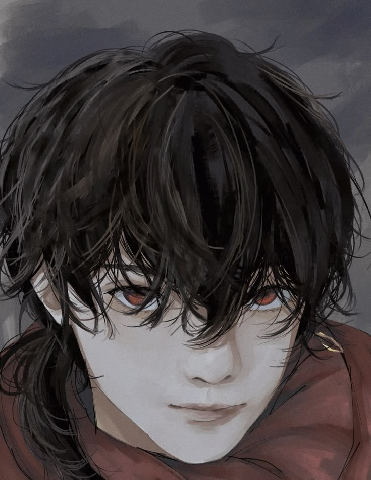

Tenma Moto
Prince of the North · The Carrier
I. Identity
Full Name: Tenma Moto
Name: Ten (heaven) and Ma (the interval): heaven’s pause, a son of the quiet years between wars.
Age: 12
Race / Lineage: Human · Moto, the Kōkan, the red line; Greymane through his mother
Faction: House Moto at Kharven-Seat. Son of King Muken Moto and Queen Amelia Greymane.
Epithet: Unnamed.
Status: Alive
Family: Father Muken Moto; mother Amelia Greymane; elder brothers Sodoku (13, the crown prince) and Sonzai (13); sister Mizuyi, taken by Cozbi Mahuo on the night of her betrothal; younger brother Kimizu (10).
Current Location: Kharven-Seat
Catalyst Event: Not known.
II. Soul Architecture
| Stat line | Stage V Splintering · Expert (Faceted) Level 135 · Refined · unclassed Fate V Mastered, I · Spirit IV Walked 35%, unread · Lenses: home + 1 |
| Level | 135; it holds Splintering (101) and would hold Glory (115), and no Residual Strain builds in him short of 200 |
| Stage | V, Splintering · Expert; the Stage roofs every Sub-Stat at 350, unstable from 276 |
| Path | Fate V Mastered · Spirit IV Walked 35% |
| Mastery | Fate I, Touched: the Moto blood opened it early, and a Work held is an Epoch grip, which reads rung I from Ascension; his Traits work at it · Spirit: unread below Glory |
| Yield (η) | 0.62 |
| Lenses | home Mortalis + 1 held (Transference), the Expert’s count |
| Class | unclassed until Glory |
| Soul Crystal | Faceted, Refined |
| Points | 3,213 |
Hataraki carried too far. KEGARE is the Moto’s Hataraki pushed to an extreme the house never meant it to reach. Which Work it grows from is not known.
III. Wellspring Harmonizations
| Wellspring | Folk name | Kind | Titan | Operation | Hue | Depth | What it does in him |
|---|---|---|---|---|---|---|---|
| Mortalis | the Black Gate | Medium | Valmir | dissolution | venous black-red | deep | Ending looked at squarely. It is the death-touch in KEGARE, the impurity that clings to whoever has touched an end, and why the threads he spreads along feel cold. Strengthens Persistence and Cognition. |
| Transference | the Give-and-Take | Fate | Sylorin | distillation | median violet | held | What one tuned soul holds, the other can use, with nothing carried between them. It is the road his spreading runs along. Strengthens Synergy, Projection and Tempering Yield. |
Aura: venous black-red, the color of blood that has stopped hurrying, the same red as his eyes. A violet thread shows in it when he sends something along a bond.
IV–V. Stats
A normal look shows the Eight Primaries; a Primary is the total of its eight Sub-Stats, read by their mean (Dominion’s over seven, Throne outside it). Room to grow: every Primary sits under the Stage’s cap.
| Primary | Total | Sub-Stats |
|---|---|---|
| Vitality | 436 | Fortitude 38 · Absorption 38 · Constitution 38 · Hemostasis 44 · Regeneration 44 · Filtration 152 · Tolerance 44 · Threshold 38 |
| Ardency | 310 | Flux 38 · Alacrity 38 · Depth 38 · Penetration 44 · Compression 32 · Cascade 61 · Overchannel 27 · Density 32 |
| Gnosis | 298 | Perception 44 · Acuity 38 · Forecast 38 · Fluency 32 · Retention 38 · Analysis 38 · Cognition 38 · Vigilance 32 |
| Dexterity | 293 | Celerity 38 · Reflex 44 · Finesse 49 · Economy 32 · Evasion 38 · Grapple 27 · Feint 38 · Sequence 27 |
| Harmonics | 724 | Attunement 66 · Projection 140 · Breadth 123 · Stability 49 · Empathy 44 · Synergy 186 · Axis 78 · Suppression 38 |
| Resilience | 472 | Integrity 49 · Ward 44 · Persistence 58 · Anchoring 58 · Fortification 83 · Hardening 38 · Oath 44 · Continuity 98 |
| Tempering | 275 | Clarity 44 · Overflow 32 · Maturity 38 · Coherence 38 · Tempering Yield 38 · Ceiling 32 · Capacity 32 · Longevity 21 |
| Dominion | 405 | Radius 61 · Sovereignty 38 · Sense 35 · Gravity 38 · Pressure 44 · Command 32 · Fate 157 · Throne 0 |
VI. Force of Hand
No measured strike on file. He does not fight to hit hard; his dolls do the work.
VII. Aether Flow
| Reserve | 141,195 EU, held as Essence, by the law of reserves at Level 135 |
| Flux Density | 650 EU/g |
| Yield (η) | 0.62, Fate I under the early grip |
| AU/s | 403.0 at full output |
| From full | about 5.8 minutes of full output, far longer at the pace of a lesson or a quarrel |
| A Fate pull | at Fate I, 0.60 to 0.70 of what he spends arrives; Fate’s price is the knot |
VIII. Traits
Full accounts: Tenma Moto — Abilities
Every Trait reads at his Fate I, the early grip’s rung.
KEGARE (穢れ), the Defilement · Primary Trait
KEGARE is basically Ontopathogenesis: the power to infect what a thing is, so that whatever he carries spreads from one thing to the next like a sickness. In the old belief, kegare is the impurity that clings to anyone who touches death and passes on to whoever touches them. Tenma’s soul works the same way. Everything in the world is tied to everything else by fine threads of fate, and Tenma can send whatever he holds along those threads. It can be something physical, like a wound, rot, frost, fire or poison, or health and strength. It can be something magical, like a working, a curse or a blessing. It can be a state, like fear, sleep, courage or an oath’s hold. One touch is enough to start it, and from there it travels through touch, through bonds and through shared ground, one soul catching it from the next. At its extreme it stops being something a person has and becomes what they are: a man becomes stone, a curse becomes who someone is, and a Domain turns to rot from the inside. The price is that he is always the first one infected. Everything he spreads passes through him first, so he carries a little of every sickness he has ever started. It can only travel where there is a connection, so a soul cut off from everything cannot catch it, and the Work of Purity can wash it out.
KAESHI (返し), the Return · Secondary Trait
KAESHI is basically Damage Reflection: the power to send whatever is done to him back to whoever did it. In Japanese, kaeshi is the return, the answering stroke that comes back along the same line. Tenma’s soul is woven into everything around him, and KEGARE lets anything that touches him travel along those threads. KAESHI turns that around: when someone hurts him, the hurt follows its own thread home. Cut him and the cut opens on the swordsman, in the same place. Poison him and the poisoner sickens. Curse him and the curse goes back to whoever laid it. Strike him with a working and the working lands on the one who threw it. It only wakes while he is under attack, and it is strongest when the attack is meant to kill: the more someone wants to hurt him, the harder it comes back. The price is that he feels all of it first, in full. KAESHI does not spare him the wound; it only makes sure he is not the only one who bleeds. A blow strong enough to kill him outright can still kill him, and then it kills the one who struck it as well.
IX. Domain
None.
X. Techniques
NAGASHI-BINA (流し雛), the Floating Dolls · Signature Art
NAGASHI-BINA is basically Sympathetic Magic: the power to tie a person to a paper doll, so that whatever happens to the doll happens to them. In Japan, nagashi-bina are paper dolls that families set afloat down a river to carry their impurity away. Tenma makes his own. He folds them small and white from plain paper, and the moment he ties one to a person, a thread runs between them that only he can see. Both his Traits travel along that thread. Through KEGARE, anything he puts into a doll spreads into the person tied to it: a wound, a sickness, a curse, sleep, fear. Through KAESHI, a doll can take what was meant for someone he loves and send it back along the thread to whoever did it. On the field he looks like a child playing with paper. People laugh until the first doll tears.
- KATASHIRO (形代), the Effigy · He folds a doll and ties it to a person, by a touch, a hair, a drop of blood or their name spoken over it. From then on, what happens to the doll happens to them.
- NAGASHI (流し), the Floating Away · He pulls a wound or a curse out of someone into a doll and sets it loose, sending it to whoever he chooses.
- MIGAWARI (身代わり), the Stand-In · A doll tied to someone he loves takes a killing blow for them. The doll tears, and through KAESHI the blow goes home to whoever struck it.
- WARA NINGYŌ (藁人形), the Straw Doll · The finisher. It comes from the old curse ritual of nailing a straw doll to a shrine tree in the darkest hour of the night. He nails one, and the person tied to it feels every nail.
The price: every doll is tied to him as well as to its target. Everything a doll carries passes through his hands first, and if a doll is burned before he is done with it, whatever it held comes back to him.
With his brothers: Sodoku ties the threads and Tenma spreads along them.
XI. Spirit Axes
Sodoku (brother) · The Author ties the threads; the Carrier sends things down them.
Kimizu (brother) · Two years younger. Kimizu reads everything and Tenma carries it; Tenma is the one who stands in front of him.
Mizuyi (sister) · Taken by Cozbi Mahuo on the night of her betrothal.
XII. Resistances
- Filtration 152: poison, sickness and corrupted Essence move through him without taking hold, which is why he can carry what he spreads.
- Fortification 83, Continuity 98: a curse finds it hard to stay in him, and KAESHI sends it home.
- Body: Vitality 436, Dexterity 293. He is a twelve-year-old in a hood, and a strong enough blow can still kill him outright.
XIII. Physical Description
Hair: Black and unruly, a thick mop falling over the brow and into the eyes, gathered loosely at the nape.
Eyes: Red, deep and steady under the black fringe; the eye people remember.
Face: Pale, almost bloodless, with a small closed mouth and a look that holds on a person too long.
Dress: A hood and wrap of dark red cloth close about the neck.
Marks: A thin gold ring at the ear.
XIV. Psychology
Voice: soft and spare, polite to everyone, and he says sorry before he does something, never after.
Underneath: the quiet one of the four, who watches too long and says little. He carries the family’s hurts on purpose, and he has learned to be careful about where he sets them down.
How he moves: small and still, hands in his sleeves, with a fold of paper always between his fingers.
XV. Equipment
He carries no weapon and does not fight with his hands; the dolls do the fighting.
| Item | What it is | Grade | Rarity | Note |
|---|---|---|---|---|
| Paper | plain white paper, a sheaf in his sleeve | plain | Common | folded into dolls as he needs them |
| Straw and iron nails | for the straw doll | plain | Common | he keeps them wrapped, and the household does not ask |
| The red hood | a hood and wrap of dark red cloth close about the neck | plain | Common | worn in every weather |
| The gold ring | a thin gold ring at the ear | plain | Uncommon | not known |
XVI. Temperance Record
- Stage I, Murmuring: woke young, as Kōkan children do.
- Stage II, Welling: crossed in the yard at the Seat.
- Stage III, Ascension: KEGARE woke with it, when a fever went through the nursery and stopped at him.
- Stage IV, Flourishing: crossed at eleven.
- Stage V, Splintering: crossed at twelve.
- Next gate: Stage VI, Glory; it holds at Level 115, which his 135 already passes, so only the Catalyst is wanting; past Level 200 without it he would come into Residual Strain.
XVII. Fracture Log
- Named Tenma, heaven’s pause.